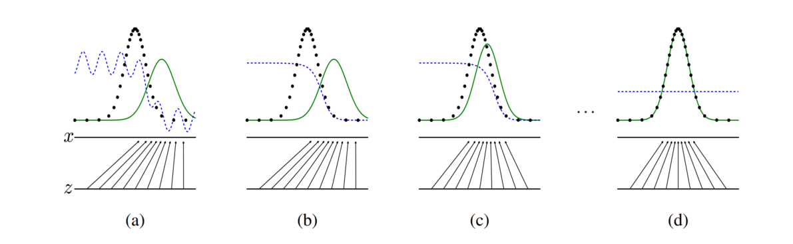
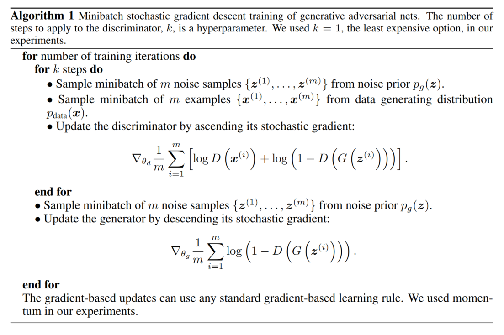

이 글은 Generative Adversarial Networks과 이후에 나온 튜토리얼인 NIPS 2016 Tutorial: Generative Adversarial Networks를 읽고 정리한 내용입니다.
Introduction
GAN은 생성모델로 관측된 데이터를 생성한 확률분포를 구하여 데이터를 생성하는 것이 목적입니다. GAN 이전의 생성모델은 풀기가 어려운 확률계산이 있다는 단점이 있습니다. GAN은 이와 달리 Discrminator와 Generator를 서로 적대적으로 경쟁시켜서 학습합니다. Generator는 관측 데이터를 생성한 분포와 점점 가까워지며 학습이 끝나면 데이터를 생성한 확률분포를 근사적으로 얻습니다.
GAN은 게임이론에서의 two-player game에서 유래되었습니다. 게임에서 각각의 player는 상대방의 전략을 매순간 인지하고 있으며 각각 상대방의 전략에 대응하여 번갈아가며 최선의 전략을 취합니다. 이렇게 최선의 전략을 번갈아가며 계속해서 취했을때 서로가 더이상 다른전략을 세울 필요가 없기에 고정된 전략만 취하는 지점인 내시균형(nash-equlibirum)에 다다릅니다. (자세한 설명 참조)
예를 들어 Discrminator는 경찰 Generator는 사기꾼인 게임에 비유할 수 있습니다. 사기꾼은 최대한 진짜같은 가짜화폐를 유통시키려 하며 경찰은 이러한 가짜화폐를 잡아내려 합니다. 사기꾼은 경찰에게 걸리지 않기위해 점점 가짜를 진짜같이 만들며 경찰은 더 정확히 진짜와 가짜를 구분하려고 발전합니다. 마지막에 경찰은 사기꾼이 만들어내는 가짜화폐를 진짜화폐를 전혀 구분하지 못하는 nash-equilibrium에 다다릅니다.
Problem Setting
관측된 데이터는 \(p_{data}\)라는 확률분포에서 샘플링 됩니다. GAN은 여타 다른 생성모델과 마찬가지로 관측된 데이터를 통해서 역으로 데이터를 생성해낸 \(p_{data}\)를 알아내고자 합니다. \(p_{data}\)만 알아낸다면 sampling을 통해 학습된 데이터와 유사한 데이터를 생성할 수 있을 것입니다.
Method
D,G로 구성된 two-player가 참여하는 minimax game의 value function은 다음과 같습니다.
\[\begin{aligned} &\underset{G}{\text{min}}\,\underset{D}{\text{max}}\,V(D,G) = \mathbb{E}_{{\bf{x}}\sim p_{data}}\left[\text{log\,D({\bf{x}})}\right] + \mathbb{E}_{{\bf{z}}\sim p_z(z)}\left[\text{log}\,(1-D(G(\bf{z})))\right] \\ &p_{data} : \text{(observed) data generating Distribution}\\ &p_z : \text{prior distribution}\\ &\text{Generator }G : \text{mapping from latent space to data(input) space}\\ &\text{Discriminator }D : \text{probability that input came from the data rather than } p_g\\ \end{aligned}\]D에 대한 value function만 따로보면 다음과 같습니다.
\[\begin{aligned} &\underset{D}{\text{max}}\,V(D,G) = \mathbb{E}_{{\bf{x}}\sim p_{data}}\left[\text{log\,D({\bf{x}})}\right] + \mathbb{E}_{{\bf{z}}\sim p_z(z)}\left[\text{log}\,(1-D(G(\bf{z})))\right] \\ \end{aligned}\]우변의 첫번째 항은 Discriminator가 관측된 real 데이터를 \(x\)를 real 데이터라고 분류할 확률입니다. 또한 -가 붙은 우변의 두번째 항은 Discriminator가 생성된 fake 데이터 \(G({\bf{z}})\)를 fake 데이터라고 분류할 확률입니다. 따라서 이와 같은 objective function을 maximize하는 D를 구하는 것은 진짜와 가짜를 잘 분류하도록 Discriminator를 학습시키는 것을 의미합니다.
G에 대한 value function만 따로보면 다음과 같습니다.
\[\begin{aligned} &\underset{G}{\text{min}}\,V(D,G) = \mathbb{E}_{{\bf{z}}\sim p_z(z)}\left[\text{log}\,(1-D(G(\bf{z})))\right] \\ \end{aligned}\]우변은 Discriminator가 관측된 가짜데이터인 \(G({\bf{z}})\)를 진짜로 분류할 확률입니다. 따라서 objective function을 minimize하는 G를 구하는 것은 Generator가 Discriminator를 더 잘 속일 수 있도록 진짜와 같은 데이터를 생성하도록 학습하는 것입니다.

- 검은색 점선 : \(p_{data}\)
- 초록색 곡선 : \(p_g\)
- 파랑색 곡선 : \(D(\bf{x})\)
- 수평선 z : latent space
- 수평선 x : data space
objective function을 최적화 하는 과정을 시각적으로 나타내면 위와 같습니다.
- : \(p_{data}\)와 \(p_g\)의 분포가 어느정도 차이를 보입니다. 또한 \(D(\bf{x})\)도 어느정도 불안정하게 분류를 하는 모습입니다.
- : \(D(\bf{x})\)가 먼저 올바르게 분류할 수 있도록 학습합니다. 이때 \(G(z)\)로부터 만들어진 가짜 데이터가 사용됩니다.
- : \(G(z)\)가 점점 더 진짜 데이터를 생성하도록 학습합니다. 이때 \(D(\bf{x})\)를 얼마나 잘 속이고 있는지가 사용됩니다. 또한 이전보다 조금 더 \(p_g\)가 \(p_{data}\)와 비슷해졌습니다.
\(\vdots\)
- : \(G(z)\)가 점점 더 진짜 데이터를 생성하도록 학습합니다. 이때 \(D(\bf{x})\)를 얼마나 잘 속이고 있는지가 사용됩니다. 또한 이전보다 조금 더 \(p_g\)가 \(p_{data}\)와 비슷해졌습니다.
- : G가 거의 완벽하게 D를 속이며 진짜같은 데이터를 생성할 수 있습니다. \(p_g \approx p_{data}\)
Implementation

- 실제로는 목적함수를 D,G에 번갈아가며 numerical,iterative method를 사용하여 최적화함.
- 충분한 성능을 가져서 더 이상 개선되지 않을 때(nash equilibrium에 도달했을 때), G의 확률분포 \(p_g \approx p_{data}\)
(Detail) - 주어진 G에 대해서 D를 끝까지 최적화 하는 것은 비효율적이며 과적합을 발생시킴 \(\rightarrow\) Discriminator를 업데이트 횟수를 k로 제한(논문에서 \(k\) = 1) - 학습 초기에 Generator G가 좋지 못할 경우 \(\text{log}(1-D(G(\bf{z})))\)는 기울기가 거의 없음 => 학습 초기에만 \(\text{log}(1-D(G(\bf{z})))\)를 minimize하지 않고 \(\text{log}D(G(z))\)를 maximize 하는 방식을 취함 => 더 큰 gradient가 flow
Proof
GAN은 \(p_g\)로 관측 데이터를 생성하는 확률분포 \(p_{data}\)얻는 것이 목적입니다. 그러나 아직까지 위와 같은 GAN의 알고리즘으로 정말로 \(p_{data}\)를 얻을 수 있는지는 증명하지 않았기에 확실하지 않습니다. 논문에서는 이와 관련하여 증명합니다.
- Global minimum에서 \(p_g = p_{data}\)
- Global minimum으로 수렴할 수 있는가?(아직 잘 모르겠네요 ㅜㅜ)
1을 증명하기 위해서 value function을 조금 풀어쓰면 다음과 같습니다.
\[\begin{aligned} &\underset{G}{\text{min}}\,\underset{D}{\text{max}}\,V(D,G) = \underset{G}{\text{min}}\left[-\text{log(4)} + 2\cdot\text{JSD}(p_{data}||p_g)\right]\\ &p_{data} : \text{(observed) data generating Distribution}\\ &p_g : \text{(implict) generator's distribution}\\ &\text{Generator }G : \text{mapping from latent space to data(input) space}\\ &\text{Discriminator }D : \text{probability that input came from the data rather than } p_g\\ \end{aligned}\]우변을 보면 jenson-Shannon divergence(JSD)가 존재합니다. JSD는 두 확률분포간의 차이를 측정하며 항상 0보다 크거나 같으며 두 확률분포 \(p_g,p_{data}\)가 같을때 최솟값 0을 가집니다. 그러므로, global optimal에서 \(p_g = p_{data}\)입니다.